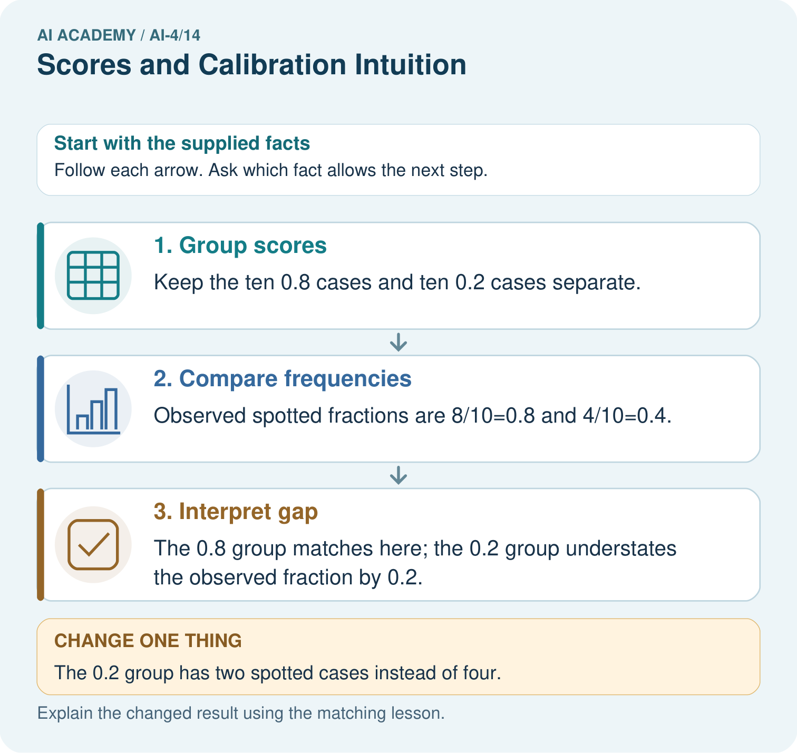

AI Academy · Level 4 · Grade 9 · Week 14 · Teacher guide
Scores and Calibration Intuition
Learn to understand, design, build, test and explain AI systems responsibly.
Project: Responsible Plant Classifier
Teacher guide · 1 of 8
Scores and Calibration Intuition
Teach the learning cycle
Primary target: Interpret calibration using groups of forecasts
| Session | Sequence and minutes | Resources |
|---|---|---|
| Session 1 · Understand · 45 min | 0–7: recall and prerequisite; 7–15: inspect the concrete case and predict; 15–30: teacher models the worked trace; 30–40: learners explain a step using the text and visual; 40–45: check the core idea. | Sections 1–6; record the brief recall in the workbook. |
| Session 2 · Practise · 45 min | 0–5: retrieve the procedure; 5–15: W2 completion practice; 15–23: explain and check with a partner; 23–30: each learner answers the misconception check; 30–40: targeted reteaching or a harder variation; 40–45: prepare the investigation. | Sections 7–10; use the matching workbook W2 and misconception check. |
| Session 3 · Investigate and transfer · 45 min | 0–5: retrieve the decision rule; 5–20: investigate or trace; 20–30: start the independent case; 30–38: connect the project; 38–43: act on feedback; 43–45: plan the return check. | Sections 9 and 11–14. Give extra time to finish the full task set; use Section 15 when the week includes a coding lab. |
This is a starting allocation of 135 minutes, not a validated duration. Preserve all named topics. Schedule extra time for connected examples, the full investigation, independent cases and project building. Repeated copies of a case share one recorded attempt; they are not new evidence.
Retrieval answer guidance
Train a Classifier
Without opening the old lesson, explain one key idea from Train a Classifier. Give an example and a mistake that the idea helps you avoid.
Look for: Connect training-only scaling and neighbour prediction in one pipeline
Reference example, not the only acceptable wording: fit learns training minima and ranges and stores scaled training rows with IDs and labels. predict takes a raw feature pair and the fitted state. Evaluation compares a prediction with its reference label afterward. Validation references belong only in evaluation, not in fitting or the neighbour pool.
Decision Trees
Without opening the old lesson, explain one key idea from Decision Trees. Give an example and a mistake that the idea helps you avoid.
Look for: Fit a root question and leaf predictions from training examples
Reference example, not the only acceptable wording: The root asks near, with branches 0 and 1. Leaves predict clear for 0 and blocked for 1. Depth is one. Training labels determined both leaf majorities and the error comparison that selected near rather than tall.
Leakage
Without opening the old lesson, explain one key idea from Leakage. Give an example and a mistake that the idea helps you avoid.
Look for: Choose a split unit that matches the intended prediction claim
Reference example, not the only acceptable wording: Training fits the model; validation compares development choices; test evaluates after choices are fixed. Repeatedly selecting by the test score uses that set for development, so it is no longer an untouched final evaluation.
Use the student module and workbook section with this exact week title. The worked case, independent question and answers below form one aligned lesson sequence.
What the learner must demonstrate
Twenty cases receive score .7 and fourteen are correct. Explain what the observed rate suggests and what it does not establish about another score group.
Concept to explain
A model score can rank predictions without matching the real frequency of correct outcomes.
| Term | Meaning |
|---|---|
| score | model value used for ranking or confidence |
| calibration | scores align with observed frequencies |
| bin | group of predictions with similar scores |
| reliability | agreement between score and outcome rate |
Prepare the class
Use the supplied scenario, student illustrations and blank paper. For numeric work, offer counters or a calculator after learners show the setup. Fictional records are supplied; personal data and paid accounts are unnecessary.
Allow 80 minutes: recall 8; explanation 12; worked demonstration 15; guided practice 20; independent assessment 15; project and reflection 10. Extend the lab into a second session when needed.
Preparation for the connected explanation
Teach two 45-minute sessions. This week focuses on calibration as a group property. Model the worked example first, collect the new W 4 case independently before feedback, and use the fresh retry to check transfer. Award credit for traceable reasoning and bounded claims, including justified uncertainty.
Readiness answer
No. Its interpretation must be established; a threshold can act on a score without making it a calibrated probability.
Printed student lesson and workbook
Paper, pencils and a calculator for fractions
The fictional examples and a blank evidence table
Optional Python 3 editor; no external packages or AI accounts required
End goal for the pictorial case
By the end, I can explain scores and calibration intuition using a traced example and a stated limitation.
This added worked case illustrates the week’s main idea. Retain all original and connected topics; schedule its practice within the teaching cycle.
Teacher guide · 2 of 8
Explain the mechanism
Explain the mechanism
Trace the information, fitted behavior, and evaluation proof separately.
QUESTION Bin prediction scores and compare average score with observed correctness.
MODEL IDEA A model score can rank predictions without matching the real frequency of correct outcomes.
PROOF NEEDED Use an unseen case, visible calculation, error analysis, and a stated limitation.
UNDER THE HOOD For this example, each score estimates the probability that the selected label is correct. Ten predictions have scores near 0.8; six are correct, so observed correctness is 6/10=60%. If instead scores mean probability of the spotted class, compare them with the fraction of reference-spotted leaves.
Draw a fresh data → model → prediction → evaluation trace:
Predict first. Then check each step. A correct answer without visible evidence cannot be audited.
STEP 1 Each score estimates the probability that the selected label is correct. Ten predictions have such scores near 0.8.
STEP 2 Only six are correct, so observed correctness is 6 ÷ 10 = 60%.
STEP 3 The score ranking may still help, but 0.8 should not be stated as an 80% guarantee.
STEP 4 Use bins across many cases and design an uncertain zone requiring human review.
CHECK Verify the denominator, unit, split, class definition, and data version before interpreting a score.
Recalculate, retrace, or restate the evidence independently:
Concrete teaching case
Ten cases receive probability .8 for spotted; eight are spotted.
Interpret calibration and its limits.
Exact explanation to model
8/10 matches .8 in this tiny bin. It illustrates calibration, not proof of global calibration or individual certainty; test more bins and data.
Explain the added worked example
If many comparable cases receive probability .8, a calibrated model should produce positives in roughly 80 percent of those cases over adequate data. It does not mean every case is 80 percent correct or that exactly eight of each next ten must be positive. Calibration is assessed across groups.
Use fictional classroom data throughout this investigation. Keep the task, units, reference labels and data split visible as you reason. Earlier weeks supplied the model-building process; this week examines calibration as a group property.
In a fictional held-out check, ten cases all have predicted probability .2 and two are positive. Another ten all have probability .8 and six are positive. Average predictions are .2 and .8; observed frequencies are 2/10=.2 and 6/10=.6. The second group is overconfident for positives in this sample.
Trace the calculation on paper before running this optional Python check. Use the stated fictional inputs and compare intermediate values. The code checks this example; your independent workbook case uses different evidence.
Key terms
| Term | Meaning |
|---|---|
| Calibration | Agreement between predicted probabilities and outcome frequencies across comparable groups |
| Bin | A declared interval grouping predictions |
| Observed frequency | Positive outcomes divided by cases in a group |
| Reliability diagram | A plot comparing group average prediction with observed frequency |
Model the reasoning aloud
Use the complete worked example below before asking learners to complete W2. Reveal a small part, invite a prediction, then explain the deciding step. These teacher notes contain solutions; do not reveal the independent case answer during modelling.
Calibration as a group property at a glance
| Thinking move | Teacher prompt |
|---|---|
| Plan | What is given? What is the question? Which procedure fits these facts? |
| Do | Point to each input and intermediate step in the worked trace. Name the rule that allows the next step. |
| Check | Does the output answer the question? Which assumption or limitation prevents a larger claim? |
Use the diagram and verbal explanation together. Ask learners to match a sentence to a specific visual step; do not assign learners fixed visual or auditory learning styles.
A pictorial worked case: Scores and Calibration Intuition
Treat calibration as a comparison across groups of probability scores.
The facts we will use
Toy classifier outputs p(spotted)=0.8 on ten cases; eight are actually spotted. Another ten have p=0.2; four are spotted.
All inputs and outcomes in this worked example are invented classroom data; no real model run is claimed.

Read the picture one step at a time
Why this result follows
Read the picture in order. The 0.8 group matches here; the 0.2 group understates the observed fraction by 0.2. The arrows show which recorded input or intermediate result each decision uses. Explain the deciding step aloud before checking the changed case; pointing to the final answer alone does not show how it follows.
What this example does not establish
Ten cases per group provide noisy evidence; the exercise does not establish calibration on every score or setting.
Change one thing in the pictured case
Change: The 0.2 group has two spotted cases instead of four.
Prediction: Its observed fraction becomes 0.2 and matches the supplied score in this group.
Reason: Calibration compares stated probabilities with group outcome frequencies.
Ask while showing the picture
Cover the result. Ask learners to name the inputs and predict the next step. Uncover one step, connect the icon to the actual procedure, and explain its evidence. Then change the supplied condition and compare. The picture is a representation; it does not document execution of a real AI model.
Teacher guide · 3 of 8
Demonstrate and guide practice
Demonstrate and guide practice
Board sequence
Write the given facts: Ten cases receive probability .8 for spotted; eight are spotted.
Write the question to explain: Interpret calibration and its limits.
Reveal after predictions: 8/10 matches .8 in this tiny bin. It illustrates calibration, not proof of global calibration or individual certainty; test more bins and data.
Keep for an independent attempt: Among 20 predictions with score 0.8, 12 are correct. What is observed accuracy in this group and how does it compare with 0.8?
Classroom dialogue
Ask: Which facts are given, and which would we have to assume? Learners mark relevant details before discussing answers.
Say: Predict first. Show the rule, information path or calculation that would produce the result. A correct guess is not yet an explanation.
Reveal reasoning one step at a time. Explain why a tempting alternative fails. Write units and denominators for arithmetic, trace conditions for decisions, and identify supporting sources for claims.
In pairs, one learner solves while the other checks evidence; exchange roles. Remove the worked answer before independent assessment.
Model these guided questions
Guided response: The .8 group exceeds observed .6 by .2, or 20 percentage points in this sample. Exit response: The reported improvement reuses the answers used for adjustment; evaluate the frozen adjustment on separate data.
Case-specific teaching sequence
| Stage | Teacher action |
|---|---|
| Session 1 start to 7 minutes | Use the prerequisite question: Does a score necessarily represent a probability? Check the explanation before proceeding. |
| 7 to 18 minutes | Read the opening and model the worked evidence. Ask students to identify calibration in context. |
| 18 to 32 minutes | Complete W 1 and W 2 with support: compute frequencies; locate the discrepancy. Require the evidence, not only the final response. |
| 32 to 45 minutes | Read the visual row by row. Collect the guided explanation and compare reasoning in pairs. Trace the Python check after the paper calculation. |
| Session 2 start to 8 minutes | Retrieve the distinction between calibration and bin. Invite a counterexample to an overconfident claim. |
| 8 to 20 minutes | Discuss the application and complete W 3: Why can constant .5 predictions look calibrated but rank poorly? |
| 20 to 35 minutes | Collect W4 independently before giving hints. Assess these outcomes: Interpret calibration using groups of forecasts; Compare average predicted probability with observed frequency. Record any support used. |
| 35 to 45 minutes | Use W 5 and the exit response to assess limits. Give targeted feedback, then the fresh retry. Save evidence of independent understanding. |
Reduce help deliberately
Completion task: Which worked group overstates positive frequency and by how much?
Teacher check: Teacher explanation: The .8 group exceeds observed .6 by .2, or 20 percentage points in this sample.
Start by identifying the given inputs together. Leave the intermediate steps blank. If needed, model one step, then withdraw that help on the next step. Move to a full trace only when the partial trace is understood. For partners, alternate explainer and checker; collect a response from every learner before discussion.
Individual reasoning check
Use the worked case for Calibration as a group property. Proposed explanation: “A final answer is enough”. Decide whether this explanation is supported. Point to the step or supplied fact that decides; explain your repair if needed.
Expected correction: Ask for the relevant counts, units, procedure or saved record. For this week: 2/10=.2 and 6/10=.6.
Collect explanations, not only yes/no votes. If a misunderstanding is common, re-model the relevant step for the class. If it affects a few learners, give a short targeted group explanation while others solve a more demanding variation.
Pictorial practice question
Does a calibrated 0.8 score mean every such leaf is spotted? Point to the relevant step in the picture, then write the changed result and the rule or evidence that supports it.
Reasoned teacher answer
No. It describes a group proportion: here eight of ten are spotted, and two are not. It is not an individual guarantee. Changed-case check: Its observed fraction becomes 0.2 and matches the supplied score in this group. Calibration compares stated probabilities with group outcome frequencies.
Changed-case reasoning: Its observed fraction becomes 0.2 and matches the supplied score in this group. Calibration compares stated probabilities with group outcome frequencies.
Collect each learner’s explanation before discussion. Use the first missing connection between input, deciding step and result to choose support. This question is worked-case practice, not fresh mastery evidence.
Teacher guide · 4 of 8
Run the weekly evidence lab
Run the weekly evidence lab
Keep the test conditions fixed, record every result, and change only one planned factor.
1. Write the hypothesis and expected evidence before running.
2. Reliability Lab: sort thirty predictions into score bins, calculate observed correctness, and identify overconfident regions.
3. Run one normal, one boundary, one missing, and one shifted case.
4. Calculate the metric from raw counts or row-level errors.
5. Interpret what changed, what did not, and what remains unsafe or unknown.
Make the lab runnable
Use the concrete case as the shared normal case and the independent question as a second case. Each pair creates a boundary or missing-information case and predicts its result before testing. Keep the expected result separate from an observed mistake.
| Record | What to capture |
|---|---|
| Input or evidence | Exact data, instruction or claim |
| Expected result | Answer or safe fallback declared before the run |
| Observed result | Actual result, including errors |
| Explanation | Rule, calculation or evidence explaining the outcome |
| Next test | One justified change and a new prediction |
Diagnose and reteach
MISCONCEPTION TO REPAIR A score of 0.9 means the prediction has exactly a 90% chance of being correct.
For guessing, return to given facts and request a trace. For vocabulary without application, use one example and one non-example. For arithmetic errors, check the setup before the calculation. Finish with a different uncoached case before recording mastery.
Address these additional misconceptions
A final answer is enough: Ask for the relevant counts, units, procedure or saved record. For this week: 2/10=.2 and 6/10=.6.
A stronger claim makes a stronger project: The reported improvement reuses the answers used for adjustment; evaluate the frozen adjustment on separate data.
The new case can be copied from the example: The independent task changes the evidence. Require a fresh explanation: Points (.3,.4) and (.7,.7). The first understates observed frequency by .1; the second agrees on this sample. Group sizes still limit claims.
Match the support to the first error
| What the response shows | Next teaching action |
|---|---|
| Missing or misread facts | Read the case aloud, mark supplied versus unknown facts, and let the learner restate it. |
| Wrong procedure | Return to the deciding step in the worked case. Contrast it with the proposed incorrect explanation. |
| Arithmetic or implementation error | Trace intermediate values or lines; preserve the first mismatch and retry that step. |
| Correct result without a reason | Ask for a trace and a changed case before marking independent understanding. |
| An unsupported wider claim | Ask which supplied evidence supports the claim and which further observation would be needed. |
Offer an oral explanation, drawing, enlarged visual or fewer examples when that removes a reading/writing barrier. Keep the same reasoning goal. Stretch secure learners by changing a boundary or assumption and asking them to defend the effect, not simply by assigning more of the same questions.
Teacher guide · 5 of 8
Assess and explain the answers
Assess and explain the answers
Worked case answer
8/10 matches .8 in this tiny bin. It illustrates calibration, not proof of global calibration or individual certainty; test more bins and data.
Independent question
Among 20 predictions with score 0.8, 12 are correct. What is observed accuracy in this group and how does it compare with 0.8?
Expected independent answer
Observed accuracy is 12/20 = 60%, below the 80% score. This small group suggests overconfidence, but more data is needed to assess calibration reliably.
What counts as evidence
| Criterion | 0 points | 1 point | 2 points |
|---|---|---|---|
| Result | Incorrect or absent | Partly correct | Correct with necessary conditions |
| Reasoning | No supporting trace | Some steps | Clear mechanism, calculation or source support |
| Limit | Overclaims certainty | Vague limitation | Relevant uncertainty or missing fact |
| Transfer | Copies without adapting | Adapts with prompts | Solves a changed case independently |
Use 6/8 as a classroom checkpoint, with 2 required for both Result and Reasoning. This is a proposed teaching rule, not a validated certification threshold. Do not count a coached answer as independent mastery; correct unsafe or unsupported claims regardless of total.
Feedback
Ask the learner to find the evidence that challenges this claim: “A model score of 0.8 guarantees that this particular prediction is correct.” Keep the first attempt and an uncoached retry separate.
Original transfer answer
14/20=.7 matches the stated score for this small group, illustrating calibration if scores mean estimated correctness probability. It does not establish global calibration, stability or certainty for one case. Examine more data and other bins with a clear score meaning.
Explanations for the additional workbook examples
W1 Compute frequencies
Give the observed frequencies for the two worked groups.
Teacher explanation: 2/10=.2 and 6/10=.6.
Use each group’s observed positive count over its observed total: 2/10 = 0.2 and 6/10 = 0.6. These are sample frequencies for the worked groups. Do not turn either small-group observation into a guarantee about the next individual or a proof of calibration.
W2 Locate the discrepancy
Which worked group overstates positive frequency and by how much?
Teacher explanation: The .8 group exceeds observed .6 by .2, or 20 percentage points in this sample.
W3 Separate ranking
Why can constant .5 predictions look calibrated but rank poorly?
Teacher explanation: When half the cases are positive, the overall fraction agrees, but every case has the same score and no ranking is provided.
W4 Apply independently
Twenty cases all predict .3 with eight positives; ten all predict .7 with seven positives. Give plot points and interpret.
Teacher explanation: Points (.3,.4) and (.7,.7). The first understates observed frequency by .1; the second agrees on this sample. Group sizes still limit claims.
W5 Protect evaluation
What is wrong with calibrating and reporting success on the same final-test records?
Teacher explanation: The reported improvement reuses the answers used for adjustment; evaluate the frozen adjustment on separate data.
Assess independent transfer
Selected case: Twenty cases all predict .3 with eight positives; ten all predict .7 with seven positives. Give plot points and interpret.
Selected case answer
Teacher explanation: Points (.3,.4) and (.7,.7). The first understates observed frequency by .1; the second agrees on this sample. Group sizes still limit claims.
| Dimension | Evidence required |
|---|---|
| Explanation | Names the applicable idea or procedure and ties it to the supplied facts. |
| Trace and result | Preserves the given inputs and shows the relevant intermediate steps; distinguishes a prediction from an observed execution. |
| Limits | States the assumptions, missing evidence or conditions under which the result would change. |
Record each dimension as not yet, with support, or independent. Accept a valid alternative procedure with a defensible trace. Do not penalise an honestly recorded model failure if the learner correctly explains its evidence and limits.
Feedback that the learner uses
Name the earliest unsupported step and give one action to repair it. Have the learner make that repair now and explain why. Then assess the relevant skill on a fresh, fully specified case. Confirm it was not previously practised with feedback; solve and check the new case before assigning it. A follow-up design prompt is a starting brief, not automatically an equivalent test.
Teacher guide · 6 of 8
Connect and extend learning
Connect and extend learning
Responsible Plant Classifier
Add an uncertainty band to the Plant Classifier and define what the interface says when scores fall inside it.
Keep the decision, input, result, explanation and remaining limitation in the project evidence record. Retrieve this record next week rather than restarting the project.
Support and stretch
Use a tiny labelled dataset, explicit units and a named positive class. Stretch: require a baseline, held-out evaluation and subgroup or shifted-condition analysis with denominators.
Exit reflection
Ask for one decision the learner can now justify and one situation requiring more evidence or human review. Confidence ratings are separate from correct independent performance.
Bridge to the next week
Next: Week 15: Confusion Matrix. Retrieve today’s evidence and identify what carries forward and what is new.
Support and fresh reassessment
Provide a blank evidence table and allow a verbal explanation before writing. Highlight the given conditions without supplying the W 4 conclusion. Use calibration and bin in full sentences. Extension: alter one condition in the worked example and explain which conclusion changes and which remains supported.
For independent W 4, require: Points (.3,.4) and (.7,.7). The first understates observed frequency by .1; the second agrees on this sample. Group sizes still limit claims. Fresh retry: five .6 predictions with two positives give (.6,.4), an overstatement of .2 in a very small group. Require a small-sample limitation. Mark each criterion as independent, supported or not yet demonstrated. Reassess the reasoning after feedback; do not replace the first attempt silently.
Next week: Error analysis and controlled follow-up. Carry forward the saved evidence and the distinction between development choices and justified claims.
Plan the delayed return
Suggested return points in this level: ai-4/15, ai-4/17, ai-4/20. Use actual classroom dates, adjusting for holidays and gaps. One, three and six teaching weeks are scheduling choices, not a claimed optimal spacing.
At a delayed check, ask for the idea from memory and a changed application. Compare with the earlier independent response and record support used. For a new level, revisit the previous capstone before checking the new prerequisites.
| Record | Teacher evidence |
|---|---|
| Learner code and date | |
| Concept and case used; prior exposure | |
| Explanation / trace / limits | |
| Support and first repair | |
| Changed case and delayed outcome | |
| Next teaching action |
Use the evidence to choose reteaching or the next step. A completed page, confidence rating or attractive project does not by itself demonstrate understanding.
Project evidence from this case
For your Responsible Plant Classifier, save the input, procedure, observed result and limitation of this check. Label this worked example as practice; use a different, previously unreviewed case when checking independent understanding.
Teacher guide · 7 of 8
Prepare, teach and assess
Teaching target: Interpret calibration using groups of forecasts
Prepare the labelled worked-case picture, the matching workbook, fictional input cards and a place for individual responses. Check a local Python 3 environment before class; have a paper-trace version ready.
| Session | Plan | Resources |
|---|---|---|
| Session 1 · Understand · 45 min | 0–7: recall and prerequisite; 7–15: inspect the concrete case and predict; 15–30: teacher models the worked trace; 30–40: learners explain a step using the text and visual; 40–45: check the core idea. | Sections 1–6; record the brief recall in the workbook. |
| Session 2 · Practise · 45 min | 0–5: retrieve the procedure; 5–15: W2 completion practice; 15–23: explain and check with a partner; 23–30: each learner answers the misconception check; 30–40: targeted reteaching or a harder variation; 40–45: prepare the investigation. | Sections 7–10; use the matching workbook W2 and misconception check. |
| Session 3 · Investigate and transfer · 45 min | 0–5: retrieve the decision rule; 5–20: investigate or trace; 20–30: start the independent case; 30–38: connect the project; 38–43: act on feedback; 43–45: plan the return check. | Sections 9 and 11–14. Give extra time to finish the full task set; use Section 15 when the week includes a coding lab. |
Before class, solve the supported practice: Which worked group overstates positive frequency and by how much?
Reasoned practice answer: Teacher explanation: The .8 group exceeds observed .6 by .2, or 20 percentage points in this sample.
Check every learner before discussion: Use the worked case for Calibration as a group property. Proposed explanation: “A final answer is enough”. Decide whether this explanation is supported. Point to the step or supplied fact that decides; explain your repair if needed.
Misconception repair: Ask for the relevant counts, units, procedure or saved record. For this week: 2/10=.2 and 6/10=.6.
Support: read the exact case aloud, enlarge the labelled picture, supply input cards and model only the first deciding step. Accept a spoken explanation or drawing; retain the reasoning goal.
Extension: The 0.2 group has two spotted cases instead of four. Require a prediction and a reason before comparing. Expected result: Its observed fraction becomes 0.2 and matches the supplied score in this group. Reason: Calibration compares stated probabilities with group outcome frequencies.
Independent assessment: withhold the reserved answer until the learner has attempted the new case. Record support separately from correctness.
| Criterion | Not yet | With support | Independent |
|---|---|---|---|
| Explanation | Names an answer without a deciding fact | Uses a hint to link fact and decision | Explains the deciding fact in own words |
| Trace or test | Cannot connect input and result | Completes steps with prompts | Traces or tests a changed case accurately |
| Limits and revision | Claims more than evidence supports | Names a limit after a prompt | States a defensible limit and useful next test |
Project checkpoint: Test changed cases. Keep normal, boundary and failure cases; compare expected and observed results.
Use the weekly teacher answer for topic-specific reasoning. A saved progress tick is an activity record; judge mastery from the learner’s explanation and evidence.
Teacher guide · 8 of 8
Use feedback, labs and repair paths
Use the two formative questions as supported practice, not as independent mastery scores. Discuss the deciding evidence rather than accepting a guessed selection.
The feedback comes from the reviewed public worked case. Do not reveal the separately reserved independent teacher answer until the learner has attempted that case.
Ask students to predict before running code. Preserve errors and actual outputs; collect a changed test and an explanation. The branch-boundary and indexing lessons deliberately include failure cases.
Use the earlier worked-explanation links to address a specific missing building block, then return to the current question. Adapt this suggestion after observing the learner; it is not an automatic diagnosis.
Collect the completed-work portfolio as evidence. Record support separately from correctness, and assess explanation, trace/test and limitations. Progress ticks and quiz selections alone do not establish mastery.